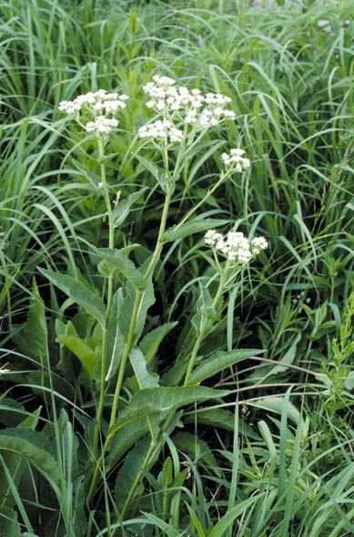
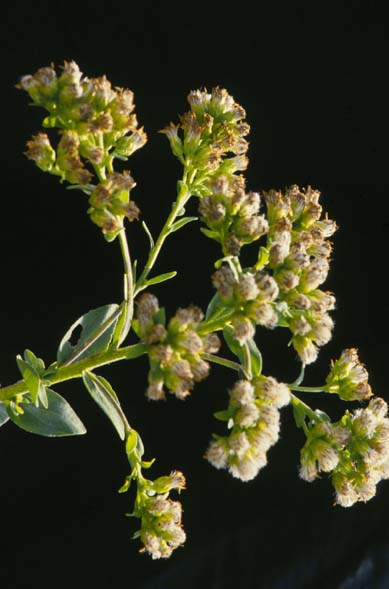
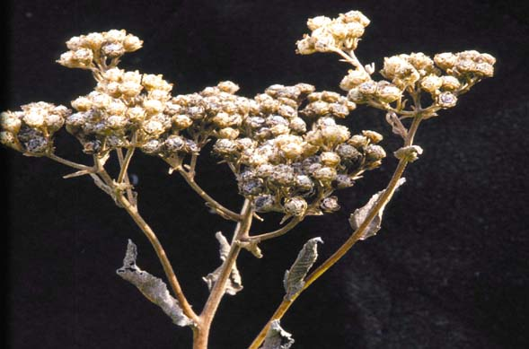

Petalostemum Candidum
Family: Fabaceae
White Prairie Clover
Swink/Wilhelm #9


Click to view larger photo
FLOWERING: July to mid-August
SEED TIMING: September
HABITAT: Dry-mesic, well-drained prairies.
DIAGNOSTIC FEATURES: 1 - 2 feet. Few to several smooth upright stems arising from a taproot. Alternate leaves have 5 - 9 linear-oblong dotted leaflets. The leaflets are broader than those of P. purpureum. Terminal inflorescence consists of 1 to a few spikes of crowded, small white flowers. Flowers form from bottom of spike upwards.
TO PICK: Seed spike turns brownish and seeds come off very easily when ripe. Pick entire head.